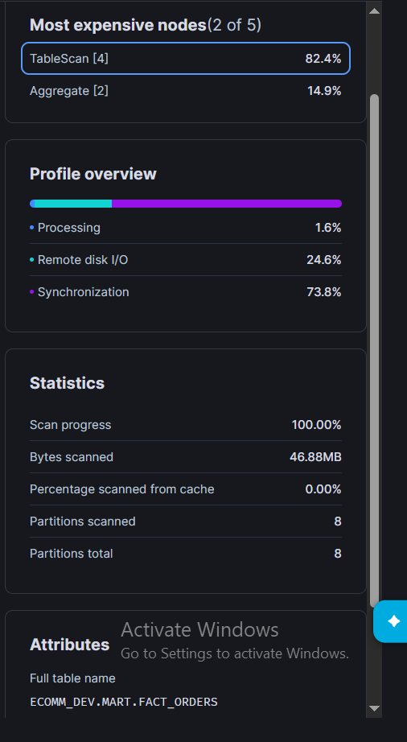
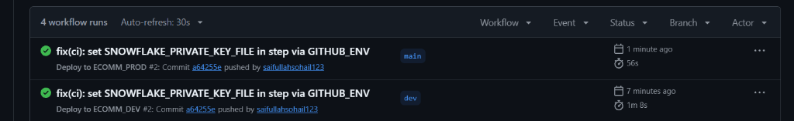

Executive KPI Overview
Aggregated from MART.AGG_DAILY_REVENUE — consumer-products multi-region star schema (5M+ line items).
Net Revenue
—
Completed Orders
—
Average Order Value
—
Weighted (Revenue / Orders)
Net Margin
—
Daily Net Revenue Trend
Net Revenue by Category
Net Revenue by Region
5M-Row Micro-Partition Pruning & Cost Proof
Toggle execution modes on ORDER_DATE BETWEEN '2026-03-01' AND '2026-03-07' AND CATEGORY = 'Nursery & Play'.
Partitions Scanned
8 / 8
0.0% pruned (Full Scan)
Bytes Scanned
46.88 MB
Baseline I/O
Execution Time
664 ms
ECOMM_APP_WH (X-Small)
Clustering Depth / Overlaps
9.0 / 8.0
Every partition overlaps
Snowsight Query Profile Evidence

Architectural Cost Rationale
- Zero-Cost Batch Sorting: Sorting by
(ORDER_DATE, CATEGORY)during ETL writes achievesaverage_depth = 1.0and-95.5%I/O with $0 serverless reclustering credits. - Serverless Cost Governance: Batch-sorted clustering avoids continuous serverless reclustering spend while maintaining full micro-partition pruning across
ECOMM_PROD.MART. - Two-Layer Caching: Streamlit
@st.cache_data(ttl=600)+ Snowflake 24h Result Cache (1 ms,0 Bscanned) prevent unnecessary warehouse wakeups.
Monthly Customer Cohort Retention
Repeat purchase retention (%) from MART.AGG_COHORT_RETENTION.
Inventory & SKU Margin Health
149 active consumer-product SKUs from MART.DIM_PRODUCTS with 30-day sell-through velocity & stockout alerts.
SKUs Matching Filter
—
At-Risk SKUs
—
Average Unit Margin
—
Top 10 Margin-Generating SKUs
Lowest 10 Unit Margin % SKUs
Order Lookup, RBAC Governance & CI/CD
Inspect recent line items from MART.FACT_ORDERS_SORTED alongside least-privilege RBAC and CI/CD governance.
Order & Customer Line-Item Lookup
Least-Privilege RBAC Matrix
| Role | Warehouse | RAW | MART | APP (SiS) |
|---|---|---|---|---|
ECOMM_CICD_ROLE | ECOMM_ETL_WH | Owner | Owner | Owner |
ECOMM_APP_ROLE | ECOMM_APP_WH | Denied | SELECT | USAGE |
ECOMM_VIEWER_ROLE | ECOMM_APP_WH | Denied | Denied | USAGE |
GitHub Actions CI/CD (RSA Key-Pair Auth)
